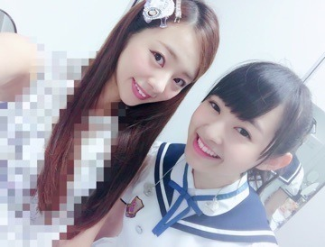
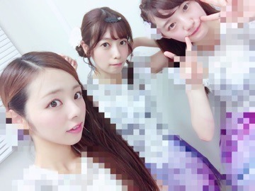
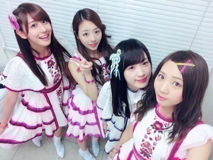
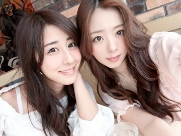

こんにちわ♡
かわむら まひろです．

久々になっちゃいましたね/ _ ;
ごめんね～．
想像以上に今年の夏はやる事いっぱい．
充実しまくっている夏ですね！
多分私が突然更新しなくなったってことは、、 色々盛り沢山なliveになるってことですね♡ぇ へ 明後日からバースデイライブが始まるけど何だかすっごい楽しみだよ．
そして「真夏の全国ツアー2016」地方公演を全部終えました♫
各地方，色々な事を感じながらliveを楽しむことができました～． 集まってくれた皆さん，ありがとうごさまいました♡
MCで，「私のこの白い歯は生まれ持った白さです」って話をしたんだけど，ちょっと面白くないですか 笑笑？
楽屋で「MC何話そう。」って言ったらね まあやがこの↑白い歯の話をしてきたのよ(*^^*)笑
ぃゃー，でも本当にね，笑ってる自分が鏡に映る時，たまにめっちゃ光ってる 笑 神宮でこの生まれ持った白い歯を沢山見せるね．笑
モザイクモザイク～。

ちー 私 ずー じょー

ぁ 質問なんだけど
私... 巻き髪に前髪流す か ストレートに前髪止めてる。 どっちのヘアスタイルでliveしようかな？？
これが巻き髪だね♡ ふわふわ

おつかれちゃん♡